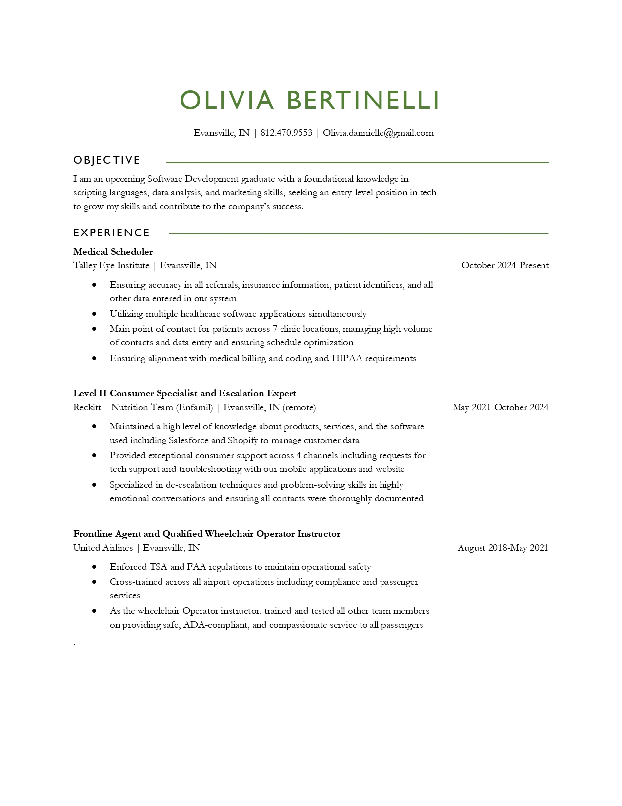

<!DOCTYPE html>
<html lang="en">
</html>
<head>
  <meta charset="UTF-8">
  <meta name="viewport" content="width=device-width, initial-scale=1">
  <title>Olivia Bertinelli | About Me</title>
  <link rel="stylesheet" href="style2.css">
  <link href="https://fonts.googleapis.com/css2?family=Inter:wght@400;600&display=swap" rel="stylesheet">

</head>

<body>
  <header>
    <h1>&lt;/about me&gt;</h1>
	
	<button id="sidebarToggle">☰ menu</button>
	<div class="layout">

  <div id="sidebar" class="sidebar">
    <a href="index.html">01. home</a>
    <a href="contact.html">02. contact</a>
    <a href="about.html">03. about me</a>
  </div>
  <div class="content">
      <main>
	    <div class="projects-container">	  
		<section class="project">
			<h2>resume preview</h2>
			<p>You can view a preview of my résumé below. Click the image to download the full version.</p>

			<a href="Olivia_Bertinelli_Resume.pdf" download>
				
			</a>
		</section>
	<section class="project">
		<h2>about me</h2>
		<p>I am a 2025 AS Software Development cum laude graduate from Ivy Tech. I have over 10 years of customer service experience to add to
		my technical skills and an eye for detail and good design. I have a great interest and passion for full-stack development and
		experience being a solo project planner and manager with a group of four other students in an academic setting. Here is a list of just a few of my strongest skills involving coding and otherwise valuble skills:</p>

		<div class="skills-grid">
		<span class="skill-tag">Python</span>
		<span class="skill-tag">JavaScript</span>
		<span class="skill-tag">HTML5</span>
		<span class="skill-tag">CSS3</span>
		<span class="skill-tag">Django</span>
		<span class="skill-tag">Godot</span>
		<span class="skill-tag">Tkinter</span>
		<span class="skill-tag">Git</span>
		<span class="skill-tag">SQL</span>
		<span class="skill-tag">JSON</span>
		<span class="skill-tag">Responsive Design</span>
		<span class="skill-tag">Graphic Design</span>
		<span class="skill-tag">CRM Systems</span>
		<span class="skill-tag">Agile Development</span>
		<span class="skill-tag">Debugging</span>
		<span class="skill-tag">Team Collaboration Tools</span>
		<span class="skill-tag">De-escalation Tactics</span>
		<span class="skill-tag">CMS Systems</span>
		<span class="skill-tag">Troubleshooting/Problem-Solving</span>
  </div>
</section>
</div>
</main>
		
  <footer>
    <p>© 2025 olivia bertinelli • <a href="https://github.com/obertinelli" target="_blank">GitHub Profile</a></p>
  </footer>
<script>
  const toggleButton = document.getElementById('sidebarToggle');
  const sidebar = document.getElementById('sidebar');
  sidebar.classList.add('collapsed');

  toggleButton.addEventListener('click', () => {
    sidebar.classList.toggle('collapsed');
  });
</script>
</body>
</html>
